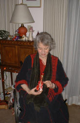

|
 LYNN
STRONGIN (b NYC 1939) grew up
in the Northeast and parts of the rural south where her daddy, an Army
psychologist, was stationed. Early studies in musical composition branched
out into work in poetry. She worked for Denise Levertov in the political
ferment of Berkeley. Began publishing in anthologies, gave peace readings.
In 1979, she moved to British Columbia Canada but her home has remained
intrinsically American, as are the tongues she studies in her fiction and
poetry. Twelve published books (including one anthology The Sorrow
Psalms: A Book of Twentieth Century Elegy) and three electronic
chapbooks. Work in thirty anthologies, fifty-five journals. Her memoir
chapter from INDIGO was recently nominated by StorySouth for
Pushcart Award. Fiction just taken by The Dublin Quarterly. Two PEN
grants, one NEA creative writing grant. Her newest collection of
poetry, Short Visiting Hours for Children (or Rembrandt's Smock),
is forthcoming from Plain View
Press in Austin, Texas. Also, her chapbook, The Birds of the
Past are Singing, is forthcoming by Cross-cultural Communications
(Merrick, New York).
|
{kind=link}